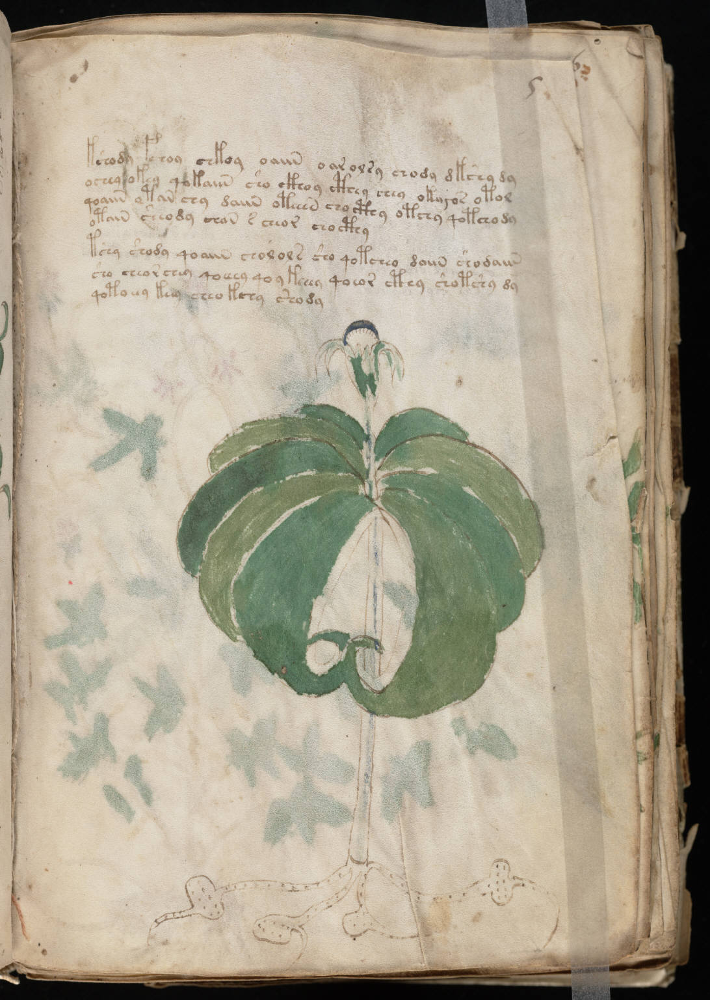

f5r
1kshody fchoy chkoy oaiin oar olsy chody dkshy dy2ochey okey qokaiin sho ckhoy cthey chey oka*or otol3qoaiin otan chy daiin oteeen cho cthy otchy qotcho dy4otain sheody chan s cheor chocthy5tshy shody qoaiin cholols sho qotcheo daiin shodaiin6sho cheor chey qoeeey qoykeeey qoeor cthy shotshy dy7qotoeey keey cheo kchy shody
